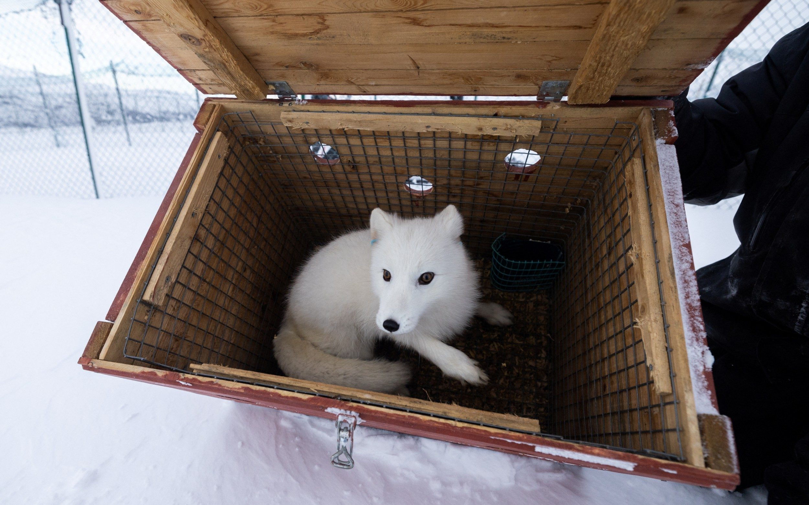
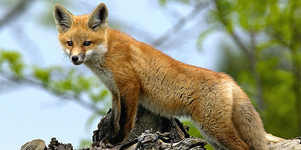
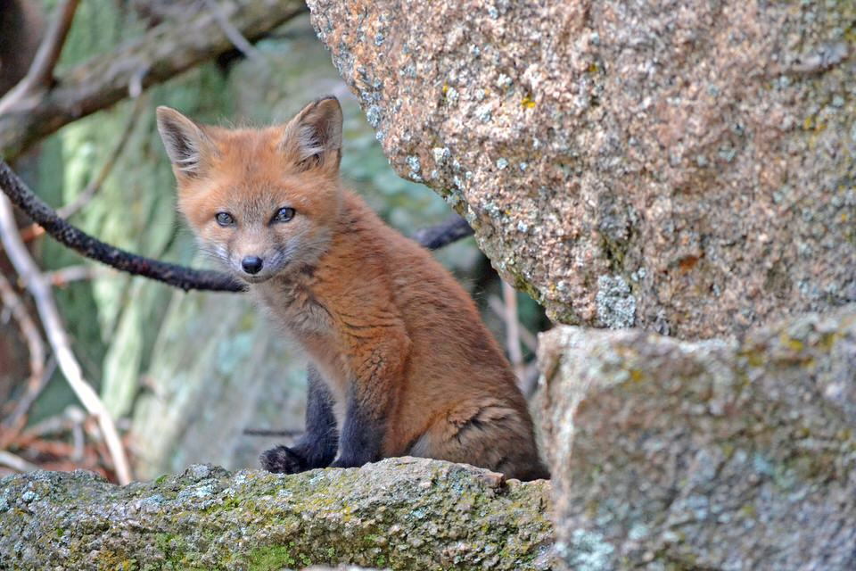
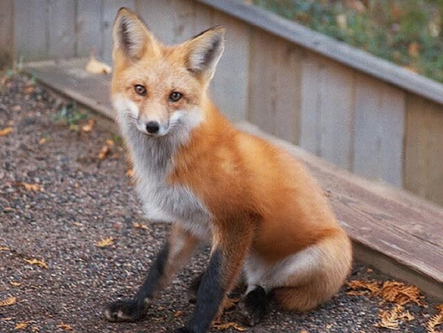

We have several new residents whose bios aren't on our websit yet - be sure to check social media for the most up-to-date content!
Lulu
Archie
Kaya
Porsha
Loki
.jpg)
Lulu - Captive-born Arctic Fox
Lulu's Story
Lulu came to me when she was only 7 weeks old. She was purchased by well-meaning people who thought that a fox would be a good fit as a pet for their family, but they learned otherwise. They lived in an apartment in a very populated city, (where it was also very illegal to own a fox without the proper licensing) and they quickly found out that a fox kit is not like a puppy. Long story short, they discovered that they had made a huge mistake. Knowing that Lulu was bound to eventually be confiscated, and desiring the best for her, they reached out to a canine rescue and asked them to take her. The resuce called me, and the rest is history! I’ve had a few foxes in my possession with almost identical backgrounds as Lulu’s. Her story is not unique, and an unfortunate reality for many exotic pets. Many exotic species do not make good additions to the average home, require advanced experience, outdoor housing, and need special enrichment. It's important to realize that just because they're cute and seemingly innocent (especially as babies), it doesn't mean they're easy to care for. Rehoming is more difficult on exotics - especially foxes - than on most domestic animals. Their sense of trust is very fragile, and they bond strongly and quickly to their caretakers when they're young. This is why it's crucial to do extensive research and get hands-on experience with the species before adding any exotic pet to your family. Thankfully, Lulu was young enough when she arrived here that it wasn't extremely difficult to establish a good relationship with her. She's my girl! And like a lot of us girls, she can be a little moody: Some days, she flops over at my feet - patiently awaiting belly rubs - the second I walk into her enclosure. Other days, I can't get anywhere near her. It's always on her terms.

Archie - Captive-born Arctic Fox
Archie's Story
The most important thing you should know about Archie: He's completely blind. Archie came to our rescue in October 2020. We don't know much about the first part of Archie's life. We were told that Archie was dropped off at a dog rescue in Colorado, and information was passed along that he was born completely blind, and that he was eight years old at the time of this surrender (putting his birthday around 2012). Next, Archie went to a fox rescue in Minnesota, called Save a Fox. From what we've been told, Archie was pretty depressed acting during his time at Save a Fox, and wouldn't come out of his shell. This was not because of any fault on their part; major life changes are difficult on any fox, especially one who can't see what's going on. After a few conversations back and forth with Save a Fox, we all decided that Archie should come stay here with us! They didn't have any other Arctic foxes, and we had space. We sectioned off a small corner of Toto and Lulu's enclosure, and kept Archie there for a couple of weeks. This allowed him to become familiar and form a safe spot within the enclosure, while also allowing him, Toto and Lulu to "meet" with a barrier between them. Once we felt that everyone was going to mesh, we opened up the corner, so Archie could come and go as he pleased, while still having his safe spot to return to. Fast forward, and Archie has come out of his shell beautifully. It's amazing. He's even usually the first of the trio to greet us with a tail wag, looking for a treat! And here's the best part... Lulu has a big crush on him! He and Lulu are like that one couple who bicker way too much (they vocally yell at each other all the time), but at the same time, you couldn't imagine them not together. Toto just rolls his eyes at them. They're the funniest, sweetest Arctic fox trio!

Kaya - Non-releasable Wild-born Red Fox
Kaya's Story
Beautiful Kaya is one of our most - if not THE most - elusive resident fox here. Kaya is a Red fox who came in as a wildlife rehabilitation intake (the goal with those intakes is always release back into the wild). She was deemed non-releasable by one of our vets, because of her strangely calm demeanor around humans. She lacked a fear of humans that would leave her safe in the wild. After my experience with another sweet intake who some of you may remember, Floyd the fox, I decided to have Kaya tested for toxoplasmosis. We ended up finding out that Kaya DID indeed show that she was positive for having had an infection - and had overcome it - at some point. We don’t know for sure whether Kaya was habituated to humans - maybe someone attempting to keep her as a pet and then released her - or if her calm demeanor is due to the toxoplasmosis infection. Toxo effects an animal’s brain, and the residual brain damage from the infection could very well have been enough to take away her flight or fight instinct, too. With all of that being said about Kaya’s demeanor - and some other quirks such as her dislike for any raw meat or treats - Kaya still doesn’t “like” people. She prefers to hide in her house if I’m near usually, and doesn’t seek out attention. These situations make me a little sad, because I know Kaya would probably LOVE to be living in the wild. Sadly, we know that Kaya just doesn’t have the ability to survive long if she were to be released. So a safe life in our sanctuary is the best option for this beautiful girl.

Porsha - Non-releasable Wild-born Red Fox
Porsha's Story
Porsha is a pet surrender that came from out of state. Although Porsha had an extremely loving owner for two years, owning a fox is illegal in most states without proper licensing. Porsha’s owner realized that their current situation could end badly - oftentimes situations like this end in euthanasia of the animal, because there aren’t many rescues who take in foxes - and she did the right thing and reached out for help with placement. Porsha has a fun, youthful personality, and she goes between super sassy to super loving in seconds. She's a great example of why it's so important to be able to recognize and be familiar with body language when working with foxes. She's a very comical fox!

Loki - Captive-born Red Fox
Loki's Story
Loki has a sad yet simple story... He was very well-loved by his previous owners, and he primarily lived in their house. He was used as an exhibition animal for a few years, as his previous family had a small business where they traveled with exotic species that they owned. They had legally owned Loki under a USDA Exhibitor's license, however, when further NYS regulations were released for certain species, from our understanding, they were unable to obtain the new license now required to own a fox in NYS. They were not alone in this scenario, as I've heard of many others going through this. It's a double-edged sword... it's good that the state is making it harder for most people to own exotics (as so many get rehomed due to the level of care required), however, it's very sad for animals that have an established, loving home. This was, yet again, another great example of how important it is to know about, adhere to, and stay up to date with your federal, state, and town-level laws.